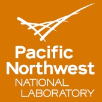
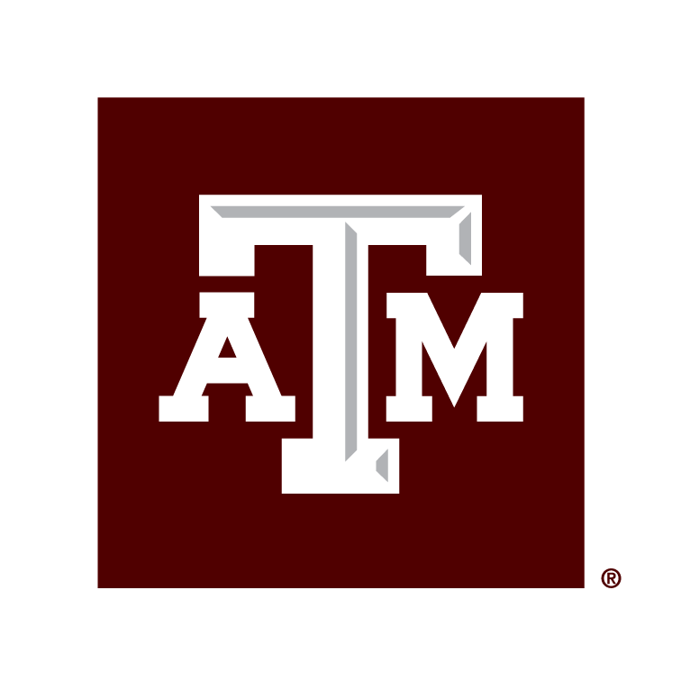
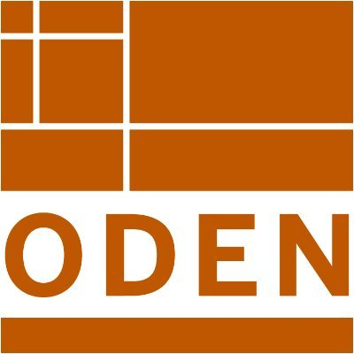
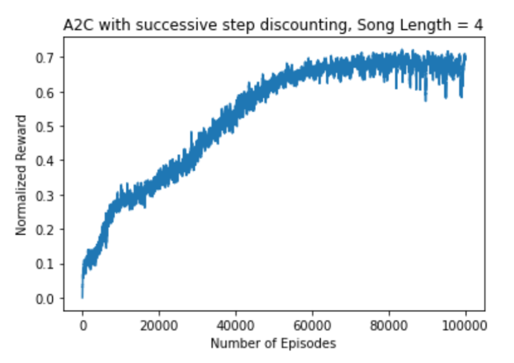
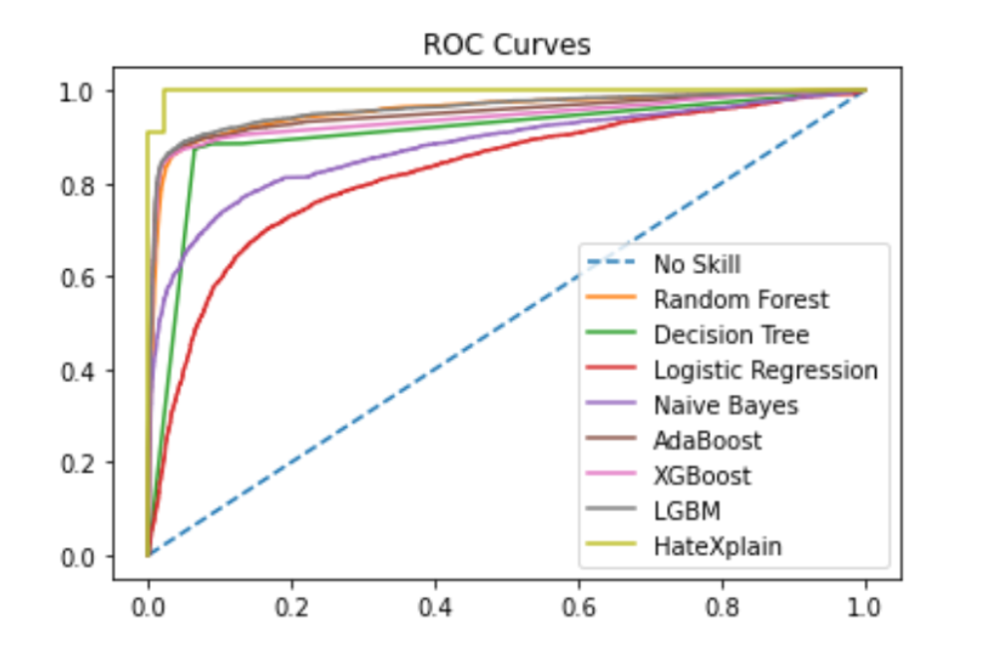
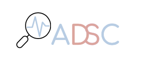

Laren SpearI am a software engineer at Pacific Northwest National Laboratory, working in Research Computing on the AI/ML Solutions team. I graduated from Texas A&M University in 2024, earning a MS in computer science under Dr. James Caverlee. My thesis was entitled "Compressing Ethical AI: Quantization Effects Of Large Language Models For Ethical Question Answering." Prior to that, I graduated from The University of Texas at Austin in 2021, majoring in Chemistry with the Elements of Computing certificate. I worked in the Computational Materials lab, funded by the Oden Institute for Computational Engineering & Sciences. |

|
October '24 |
I started full-time at PNNL, as a member of the AI/ML Solutions team in Research Computing! |
|
September '24 |
I passed my MS thesis defense! |
|
May '23 |
I started my internship at Pacific Northwest National Lab (for the second summer in a row)! |
|
May '22 |
I started my internship at Pacific Northwest National Lab! |
|
March '22 |
I made this website. |
|
August '21 |
I started grad school at A&M! |
|
 |
Software Engineer
II |
Pacific Northwest National Laboratory October '24 - Present AI/ML Solutions Team |
|
 |
Graduate Teaching
Assistant |
Texas A&M University August '23 - May '24 Spring 2024 - CSCE 451: Software Reverse Engineering, with instructor of record Martin Carlisle. Fall 2023 - CSCE 120: Program Design and Concepts in C++, with instructor of record Michael Moore. |
|
Research Software Engineering Intern | Pacific Northwest National
Lab May '23 - August '23 HPC/ML/Quantum Team |
|
|
Graduate Teaching
Assistant |
Texas A&M University January '23 - May '23 Spring 2023 - CSCE 222: Discrete Math, with instructor of record Sandeep Kumar. |
|
|
Software
Engineering Intern | Pacific Northwest National
Lab May '22 - August '22 Research Information Management Team |
|
|
Graduate
Researcher | TAMU Infolab August '21 - Present Advised by Dr. James Caverlee. I work on the reasoning capabilities of LLMs. |
|
|
Graduate Teaching
Assistant |
Texas A&M University August '21 - June '22 Spring 2022 - CSCE 482, Senior Design Capstone, with instructor of record Jeff Huang. Fall 2021 - CSCE 310, Database Systems, with instructor of record Tim McGuire. |
|
|
 |
Undergraduate
Research Assistant | The University of Texas at
Austin June '17 - May '20 (intermittently) Researcher in the Computational Materials lab under Juliana R. Duncan. I performed quantum mechanical simulations of bimetallic materials for the oxygen reduction reaction in hydrogen fuel cell catalysts. |
| Spear, L. Reactivity and Tunability of Bimetallic Materials. Poster presentation at the Texas Advanced Computing Center (TACC) Symposium for Texas Researchers. September 27th, 2019; Austin, TX. |
| Spear, L. Reactivity and Tunability of Bimetallic Materials. Poster presentation at the UTSA College of Sciences Research Conference. October 5th, 2018; San Antonio, TX Winner of the best visiting student award |
| Spear, L. Reactivity and Tunability of Bimetallic Materials. Oral presention presented at the Fall Undergraduate Research Symposium at UT Austin. September 29th, 2018; Austin, TX. Winner for the best chemistry presentation |
| Edmonds, G., Spear, L., Olivares, K., and Sun, R. Reactivity and Tunability of Bimetallic Materials. Poster session presented at the Undergraduate Research Forum at UT Austin. April 13th, 2018; Austin, TX. |
|
Texas A&M
University
| Department of Computer Science and
Engineering Scholarship August '22, August '23 $1000 department scholarship. |
|
|
The University of
Texas at Austin | College of Natural
Sciences Entrepreneurship Distinction May '21 Distinction for developing a cybersecurity solution to the U.S. Government to prevent future backdoor intrusions. Given to under 5% of UT seniors. More about this award. |
|
 |
Modeling
Zebra Finch Song Acquisition with Reinforcement
Learning CSCE 689: Deep Reinforcement Learning Course Project [link] Created a custom OpenAI Gym environment to model the state and action space of a bird's vocalizations. Used Advantage Actor-Critic and Proximal Policy Optimization to model the dopamine response for singing correct and incorrect notes. Added discounting for back-to-back correct song performances to increase exploration and maximize normalized reward. |
|
Code Judge
- Programming Practice Website CSCE 606: Software Engineering Course Project [link] Automated code judging system, like Codeforces, for A&M students. Ruby on Rails with Postgres, deployed to Heroku via Docker image. Actively maintained, used for intro programming classes at A&M. |
|
|
 |
Explainable
Hate Speech Detection CSCE 704: Data Analytics in Cybersecurity Course Project [link] Tree-based methods with similar performance to HateBERT, a fine-tuned BERT model for hate speech detection. |
|
 |
Workshops
Officer |
Aggie Data Science Club January '22 - May '23 I present biweekly workshops on topics such as SQL, Python data analysis libraries, and applied machine learning. More about the club on the Aggie Data Science Club website. |
 |
- I used to be a DJ, playing electronic music at clubs around Austin, Texas. I also had a weekly radio show on KVRX 91.7 FM. Past episodes can be found here.
- I collect vinyl records, with an emphasis on white label DJ promo releases as well as music that never got a digital release. Browse my collection here.
- I worked at a craft cocktail bar in San Antonio, Texas called RD Speakeasy.
- I used to be a semi-professional Super Smash Bros. Melee player and tournament organizer.
- At one point, I held a world record in Goldeneye 007 for the Nintendo 64 (like Pandas creator Wes McKinney!)
- I lived in Brighton, England on study abroad, and I wrote a travel blog of my experiences.
- My first research experience was with the Welch Summer Scholars Program when I was in high school. I did chemistry research.
- I like to edit Wikipedia, especially computer science articles that I feel are neglected.
- wpaskjbdn zqnakjsnde
This website is a derivative of Rishab Khincha's website, which is a derivative of Jon Barron's website. It later inspired the website of Eric Nunes.
Find the source code to my website here.